Die Struktur des Zustandsautomaten wird im Code durch die an den Zustand�berg�ngen in [Abb.: 4.1] annotierten Methoden realisiert. Das Betriebssystem ist dadurch in der Lage beim Eintreffen eines externen Ereignisses, wie z. B. einem eingehenden Anruf, die Methode pauseApp() aufzurufen, durch die das MIDlet bis zu Fortf�hrung pausiert wird. [Listing 1] zeigt ein einfaches „Hello World“ MIDlet um den Sachverhalt zu verdeutlichen.
Die [Abb.: 4.2] zeigt den Flow Designer f�r ein „Hello World“ Projekt. Wie zu sehen ist, verbindet man den Startpunkt der Applikation direkt mit der nach dem Start des MIDlets anzuzeigenden Form. Wird der mit Exit beschriftete Button des MIDlets gedr�ckt, terminiert die Applikation. Die Handhabung der Netbeans IDE, bez�glich der Applikationsentwicklung im J2ME Umfeld, soll an dieser Stelle nicht weiter vertieft werden4.
Da innerhalb der Applikation keine M�glichkeit besteht die zu �bertragenden Daten zu manipulieren bzw. zu setzen, werden die Daten innerhalb des Programmcodes direkt zugewiesen. Die Konfiguration eines Person Objekts, das die Schnittstelle IObexObjectPassing implementiert, erfolgt wie in Listing [Listing 2] gezeigt. Das Beispiel zeigt wie zwei Person Objekte konfiguriert, und anschliessend mit der Klasse BulkObjectPusher versendet werden k�nnen.
[Auf beiden Telefonen muss zun�chst das Programm mittels “Launch” gestartet werden.]
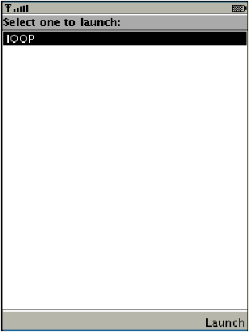
[Anzeige nach dem Programmstart.]
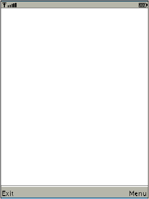
[>>1<< Der Server muss gestartet werden.]
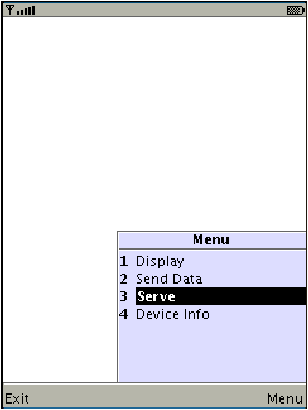
[>>1<< Der Start des Servers muss einmalig best�tigt werden, da ein Zugriff auf das Bluetooth API erfolgt.]
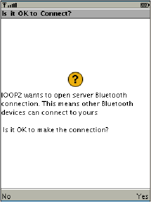
[>>1<< Die vorhandenen Daten sollen angezeigt werden.]
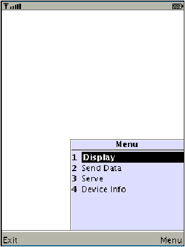
[>>1<< Es sind keine Daten verf�gbar, mit “Back” verlassen]
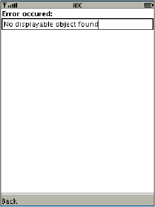
[>>2<< Daten sollen �bertragen werden.]
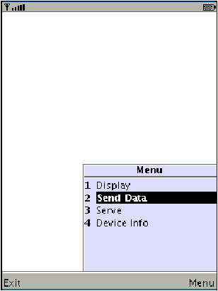
[>>2<< Zum senden “Send” w�hlen.]
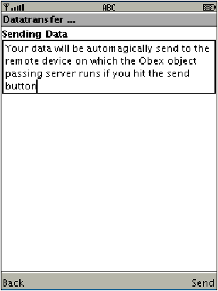
[>>2<< Der Zugriff auf das Bluetooth API muss einmalig best�tigt werden.]
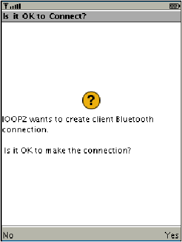
[>>2<< Die �bertragung wird best�tigt, mit “Done” verlassen.]
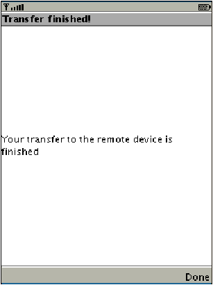
[>>1<< Empfangene Daten k�nnen angezeigt werden.]
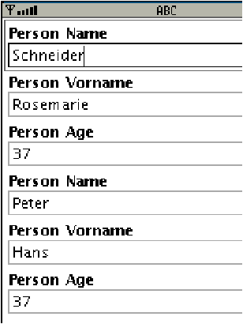
Abbildung 4.4: Ablauf der Beispielapplikation